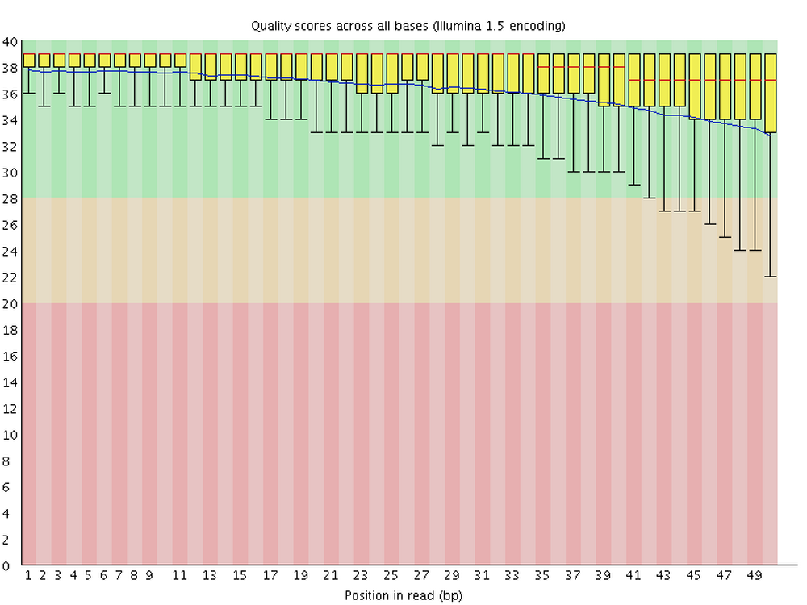

Running command-line programs with shell scripts
Week 4 - part III
In this session, …
1 FASTQ files and FastQC
1.1 The FASTQ format
FASTQ is a very common output format of high-throughput sequencing machines. Like most genomic data files, these are plain text files. Each sequence that is read by the sequencer (i.e., each “read”) forms one FASTQ entry represented by four lines. The lines contain, respectively:
- A header that starts with
@and e.g. uniquely identifies the read - The sequence itself
- A
+(plus sign) - One-character quality scores for each base in the sequence

The header line is annotated, with some of the more useful components highlighted in red.
For viewing purposes, this read (at only 56 bp) is shorter than what is typical.
The “Q†in FASTQ stands for “quality”, to contrast this format with FASTA, a more basic and generic sequence data format that does not include base quality scores. FASTQ files have the extension .fastq or .fq, but they are very commonly gzip-compressed, in which case their name ends in .fastq.gz or .fq.gz.
The quality scores we saw in the read above represent an estimate of the error probability of the base call. Specifically, they correspond to a numeric “Phred†quality score (Q), which is a function of the estimated probability that a base call is erroneous (P):
Q = -10 * log10(P)
For some specific probabilities and their rough qualitative interpretations for Illumina data:
| Phred quality score | Error probability | Rough interpretation | ASCII character |
|---|---|---|---|
| 10 | 1 in 10 | terrible | + |
| 20 | 1 in 100 | bad | 5 |
| 30 | 1 in 1,000 | good | ? |
| 40 | 1 in 10,000 | excellent | ? |
This numeric quality score is represented in FASTQ files not by the number itself, but by a corresponding “ASCII character†(last column in the table). This allows for a single-character representation of each possible score — as a consequence, each quality score character can conveniently correspond to (& line up with) a base character in the read. (For your reference, here is a complete lookup table — look at the top table, “BASE=33”).
1.2 Our FASTQ files
Our FASTQ files contain reads from 2x300 bp (i.e. paired-end with 300 bp forward and 300 bp reverse reads) sequencing on an Illumina MiSeq machine. Let’s take a look at our list of FASTQ files:
ls -lh data/fastqtotal 150M
-rw-r-----+ 1 jelmer PAS0471 2.0M Mar 1 17:09 NW102AB_R1.fastq.gz
-rw-r-----+ 1 jelmer PAS0471 2.6M Mar 1 17:09 NW102AB_R2.fastq.gz
-rw-r-----+ 1 jelmer PAS0471 2.3M Mar 1 17:09 NW102C_R1.fastq.gz
-rw-r-----+ 1 jelmer PAS0471 3.0M Mar 1 17:09 NW102C_R2.fastq.gz
-rw-r-----+ 1 jelmer PAS0471 1.9M Mar 1 17:09 NW103AB_R1.fastq.gz
-rw-r-----+ 1 jelmer PAS0471 2.6M Mar 1 17:09 NW103AB_R2.fastq.gz
-rw-r-----+ 1 jelmer PAS0471 2.3M Mar 1 17:09 NW103C_R1.fastq.gz
-rw-r-----+ 1 jelmer PAS0471 3.1M Mar 1 17:09 NW103C_R2.fastq.gz
# [...output truncated...]Note in the file listing above that:
- There are two files per sample:
_R1(forward reads) and_R2(reverse reads). This indicates that we have data from paired-end reads, as is customary when doing amplicon metabarcoding. - The files all have a
.gzextension, indicating they have been compressed with the gzip utility.
1.3 Viewing the contents of FASTQ files
Next, we’ll take a peak inside one of these FASTQ files.
The head command prints the first lines of a file. Let’s use it try to and print 8 lines, which should show us two reads:
head -n 8 data/fastq/NW102AB_R1.fastq.gz�
Խے�8�E��_1f�"�QD�J��D�fs{����Yk����d��*��
|��x���l޴�j�N������?������ٔ�bUs�Ng�Ǭ���i;_��������������|<�v����3��������|���ۧ��3ĐHyƕ�bIΟD�%����Sr#~��7���1y�Ai,4
w\]"b�#Q����8��+[e�3d�4H���̒�l�9LVMX��U*�M����_?���\["��7�s\<_���:�$���N��v�}^����sw�|�n;<�<�oP����
i��k��q�ְ(G�ϫ��L�^��=��<���K��j�_/�[ÛV�ns:��U��G�z�ݎ�j����&��~�F��٤ZN�'��r2z}�f\#��:�9$�����H�݂�"�@M����H�C�
�0�pp���1�O��I�H�P�.Ȣe��Q�>���
�'�;@D8���#��St�7k�g��|�A䉻���_���d�_c������a\�|�_�mn�]�9N������l�٢ZN�c�9u�����n��n�`��
"gͺ�
���H�?2@�FC�S$n���Ԓh� nԙj��望��f �?N@�CzUlT�&�h�Pt!�r|��9~)���e�A�77�h{��~�� ��
# [...output truncated...]Ouch! 😳 What went wrong here? (Click for the solution)
What happened here is that we are directly seeing the contents of the compressed file, which is simply not human-readable.To get around the problem we just encountered with head, we might be inclined to uncompress these files, which we could do with the gunzip command. However, uncompressed files take up several times as much disk storage space as compressed ones. Fortunately, we don’t need to decompress them:
- Almost any bioinformatics tool will accept compressed FASTQ files.
- We can still view these files in compressed form, as shown below.
Instead, we’ll use the less command, which will automatically display gzip-compressed files in human-readable form:
less -S data/fastq/NW102AB_R1.fastq.gz@M02815:77:000000000-KPK85:1:2101:3678:10660 1:N:0:CCTAAGAC+TTCTAGCT
CGAGCAATCCACTCGAGTGCCAGCAGCCGCAGTAATACGGAGGGTGCGAGCGTTGTCCGGAATCACTGGGCGTAAAGGGCGCGTAGGCGGCGCGGATAGTCGGCGGTGAAAGCCCGGAGCTCAACTCCGGGTCGGCCGTCGATACTTCCGGGCTTGAGCACTGTAGAGGCAGATGGAATTCCGGGTGTAGCGGTGGAATGCGTAGAGATCCGGAAGAACACCGGTGGCGAAGGCGGTCTGCTGGGCAGTTGCTGACGCTGATGCGCGACAGCGTGGGGAGCAAACAGGATTAGATACC
+
CCCCCGGGGGGGGGGGGGGFGGGGGGGGGG+CFGGGGGGGGGGGGGGGGGGGGGGGGGGGGGGGGGGGGGGGGGGGGGGGGGGGGGGGGGGGGGGDGGGGGGGGGGGGGGGGGGGGGGGGGGGGGGGGGGGGGGGGGGGGGGGGGGGGGGGGGGGGGGGGGGGGGGGDGGGGGGGGGGGGGGGGGGGGGGGGGGGGGFGGGGGGGGGGGGGGGGEGGGGGGGGGGGGGGGGGGGGDGGGGGGGGGGGGGGFGGFGFFFFEBFFGFFFDGFGFGBFGFGFGFFFF6?FFFGBF?FBFFF
@M02815:77:000000000-KPK85:1:2108:2535:14400 1:N:0:CCTAAGAC+TTCTAGCT
CGAGCAATCCACTCGAGTGTCAGCCGCCGCGGTAATACAGAGGTCCCGAGCGTTGTTCGGATTCATTGGGCGTAAAGGGTGCGTAGGCGGCGGGGAAAGTCTGATGTGAAATCCTGGGGCTCAACCCTGGAACTGCATTGGATACTTCCTTGCTAGAGTACTGGAGAGGAAACTGGAATTTACGGTGTAGCAGTGAAATGCGTAGAGATCGTAAGGAAGACCAGTGGCGAAGGCGAGTTTCTGGACAGTTACTGACGCTGAGGCACGAAGGCCAGGGGAGCAAACGGGATTAGATACC
+
CCCCCCGFGFGGGC-FFFGFGFFGGDFFGGGGGECGEGGAEGGGGGGGFGGDGG7CFFGGDCCFGGFCF8FGGGGGGCEGDGGGGGCGGGGGGDEGGGGBFGGDFGGGDG<DFGGGGCEGGGD:FFGGGGFFGFGGFFFFGGGFGGCFGGFGGGGG9CGCGGGG7FGGC:FFGGGGGFGG<?FCGGGGGGGGGGG9CG<ACC?EG5CFGGGGF8CCCC:C@FGCFGGGGGC58=EEG8??77:9@:<3A>7AGFGGGGC?DFC?5<5>>BGGGFGGGGG>4?C42::3:DG=><<*)*less -S suppresses line-wrapping: lines in the file will not be “wrapped†across multiple lines
Exercise: Explore the file with less
less doesn’t print stuff to screen but instead opens it in a “pager”. After running the command above, you should be viewing the file inside the less pager.
You can move around in the file in several ways: by scrolling with your mouse, with up and down arrows, or, if you have them, PgUp and PgDn keys (also, u will move up half a page and d down half a page).
Notice you won’t get your shell prompt back until you press q to quit less.
1.4 FastQC
FastQC is a ubiquitous tools for quality control of FASTQ files. Running FastQC or a similar program is the first step in nearly any high-throughput sequencing project. FastQC is also a good introductory example of a tool with a command-line interface.
For each FASTQ file, FastQC outputs an HTML file that you can open in your browser with about a dozen graphs showing different QC metrics. The most important one is the per-base quality score graph:

2 Running FastQC interactively
To run FastQC, we can use the command fastqc.
If you want to analyze one of your FASTQ files with default FastQC settings, a complete FastQC command to do so would simply be fastqc followed by the name of the file:
# (Don't run this)
fastqc data/fastq/NW102AB_R1.fastq.gzHowever, an annoying FastQC default behavior is that it writes its output files in the dir where the input files are — in general, it’s not great practice to directly mix your primary data and results like that!
To figure out how we can change that behavior, first consider that many commands and bioinformatics tools alike have an option -h and/or --help to print usage information to the screen. Let’s try that:
fastqc -hbash: fastqc: command not found...However, there is a wrinkle: while FastQC is installed at OSC[^2], we have to first “load it”: [^2]: For a full list of installed software at OSC: https://www.osc.edu/resources/available_software/software_list
module load fastqc/VERSIONExercise: FastQC help and output dir
Print FastQC’s help info, and figure out which option you can use to specify a custom output directory.
Click for the solution
fastqc -h and fastqc --help will both work to show the help info.
You’ll get quite a bit of output printed to screen, including the snippet about output directories that is reproduced below:
fastqc -h -o --outdir Create all output files in the specified output directory.
Please note that this directory must exist as the program
will not create it. If this option is not set then the
output file for each sequence file is created in the same
directory as the sequence file which was processed.-o or equivalently, --outdir to specify an output dir.
With the added --outdir (or -o) option, let’s try to run the following FastQC command:
# We'll have to first create the outdir ourselves, in this case
mkdir -p results/fastqc
# Now we run FastQC
fastqc --outdir results/fastqc data/fastq/NW102AB_R1.fastq.gzapplication/gzip
Started analysis of NW102AB_R1.fastq.gz
Approx 5% complete for NW102AB_R1.fastq.gz
Approx 10% complete for NW102AB_R1.fastq.gz
Approx 15% complete for NW102AB_R1.fastq.gz
[...truncated...]
Analysis complete for NW102AB_R1.fastq.gzSuccess!! 🎉
Specifying an output dir vs. output file(s)
FastQC allows us to specify the output directory, but not the output file names, which will be automatically determined based on the input file name.
This kind of behavior is fairly common for bioinformatics programs, since they will often produce multiple output files.
Unfortunately, with some tools, the automatically chosen file names are suboptimal, and you may want to do a separate file renaming step after running such a tool.
FastQC output files
Let’s take a look at the files in the output dir we specified:
- There is a
.zipfile, which contains tables with FastQC’s data summaries. - There is an
.html(HTML) file, which contains the graphs.
ls -lh results/fastqctotal 1.2M
-rw-r--r-- 1 jelmer PAS0471 241K Mar 13 14:50 NW102AB_R1_fastqc.html
-rw-r--r-- 1 jelmer PAS0471 256K Mar 13 14:50 NW102AB_R1_fastqc.zipExercise: Another FastQC run
Run FastQC for the corresponding R2 FASTQ file. Would you use the same output dir?
Click for the solution
Yes, it makes sense to use the same output dir, since as you could see above, the output file names have the input file identifiers in them. As such, we don’t need to worry about overwriting files, and it will be more convenient to have all results in a single dir.
To run FastQC for the R2 (reverse-read) file:
fastqc --outdir results/fastqc data/fastq/NW102AB_R2.fastq.gzStarted analysis of NW102AB_R2.fastq.gz
Approx 5% complete for NW102AB_R2.fastq.gz
Approx 10% complete for NW102AB_R2.fastq.gz
Approx 15% complete for NW102AB_R2.fastq.gz
[...truncated...]
Analysis complete for NW102AB_R2.fastq.gzls -lh results/fastqc-rw-r--r-- 1 jelmer PAS0471 241K Mar 13 14:50 NW102AB_R1_fastqc.html
-rw-r--r-- 1 jelmer PAS0471 256K Mar 13 14:50 NW102AB_R1_fastqc.zip
-rw-r--r-- 1 jelmer PAS0471 234K Mar 13 14:53 NW102AB_R2_fastqc.html
-rw-r--r-- 1 jelmer PAS0471 244K Mar 13 14:53 NW102AB_R2_fastqc.zipNow, we have four files: two for each of our preceding successful FastQC runs.
3 Running FastQC with a shell script
If we want to run FastQC for all samples, it will be much better to write a shell script and submit that as a so-called Slurm batch job, rather than running FastQC “interactively†like we did for the first sample. This is especially true for a complete data set, which would have much larger FASTQ files and possibly more samples.
3.1 The components of our script
Here is the code we needed for out first FastQC run:
# Load the software
module load fastqc/VERSION
# Create the output dir
mkdir -p results/fastqc
# Run FastQC
fastqc --outdir results/fastqc data/fastq/NW102AB_R1.fastq.gzWe will need that same code in the script, except that we need to modify our call to fastqc — we will loop over all FASTQ files as follows:
# Run FastQC (replacement for fastqc line above)
for fastq_file in data/fastq/*fastq.gz; do
fastqc --outdir results/fastqc "$fastq_file"
done- We are looping over all FASTQ files with the globbing pattern
data/fastq/*fastq.gz. The loop will run as many times as we have FASTQ files. - In every iteration of the loop, the
"$fastq_file"variable will contain 1 FASTQ file name, and we will runfastqcfor that file1.
We will be submitting this script as a batch job to the Slurm compute job scheduler. To do so, we should also add some lines at the top of the script:
#!/bin/bash
#SBATCH --account=PAS2714
#SBATCH --output=slurm-fastqc.out- The first line
#!/bin/bashmerely indicates that this is a shell script2 rather than, say, an R or Python script. - The lines starting with
#SBATCHtell Slurm some details about our compute job request (much like we did when we filled out the form to start a VS Code session):- We always need to specify an “
account”, i.e. OSC project, that should be billed. - The only other option (of many possible!) we will use here is to specify the
outputfile: this is where any output will go that would otherwise be printed to screen, such as the FastQC progress output we saw above.
- We always need to specify an “
We will also add the following line to change some shell script settings, which will cause the script to stop running if any errors occur:
# Strict bash settings
set -euo pipefail3.2 Our final script
- Open a new file in VS Code: click , then
File, thenNew File. - Save the file (e.g. press Ctrl/⌘+S) in your
scriptsdirectory asfastqc.sh. - Paste the following code in the script:
#!/bin/bash
#SBATCH --account=PAS2714
#SBATCH --output=slurm-fastqc.out
# Strict bash settings
set -euo pipefail
# Load the software
module load miniconda3
source activate /fs/ess/PAS0471/jelmer/conda/mbar24
# Create the output dir
mkdir -p results/fastqc
# Run FastQC for all FASTQ files
for fastq_file in data/fastq/*fastq.gz; do
fastqc --outdir results/fastqc "$fastq_file"
done
# Report
echo "Done with script fastqc.sh"
date3.3 Running the script
for fastq_file in data/fastq/*fastq.gz; do
bash scripts/fastqc.sh
doneapplication/gzip
Started analysis of NW102AB_R1.fastq.gz
Approx 5% complete for NW102AB_R1.fastq.gz
Approx 15% complete for NW102AB_R1.fastq.gz
#[...output truncated...]
Started analysis of NW102AB_R2.fastq.gz
Approx 5% complete for NW102AB_R2.fastq.gz
Approx 15% complete for NW102AB_R2.fastq.gz
#[...output truncated...]Let’s check the output dir:
ls results/fastqcNW102AB_R1_fastqc.html NW103C_R1_fastqc.zip NW203A_R2_fastqc.html NW304BC_R2_fastqc.zip NW403BC_R1_fastqc.html W101AB_R1_fastqc.zip W103C_R2_fastqc.html W205A_R2_fastqc.zip W304AB_R1_fastqc.html W403C_R1_fastqc.zip
NW102AB_R1_fastqc.zip NW103C_R2_fastqc.html NW203A_R2_fastqc.zip NW305AB_R1_fastqc.html NW403BC_R1_fastqc.zip W101AB_R2_fastqc.html W103C_R2_fastqc.zip W205BC_R1_fastqc.html W304AB_R1_fastqc.zip W403C_R2_fastqc.html
NW102AB_R2_fastqc.html NW103C_R2_fastqc.zip NW203BC_R1_fastqc.html NW305AB_R1_fastqc.zip NW403BC_R2_fastqc.html W101AB_R2_fastqc.zip W204A_R1_fastqc.html W205BC_R1_fastqc.zip W304AB_R2_fastqc.html W403C_R2_fastqc.zip
NW102AB_R2_fastqc.zip NW201AB_R1_fastqc.html NW203BC_R1_fastqc.zip NW305AB_R2_fastqc.html NW403BC_R2_fastqc.zip W101C_R1_fastqc.html W204A_R1_fastqc.zip W205BC_R2_fastqc.html W304AB_R2_fastqc.zip W404A_R1_fastqc.html
NW102C_R1_fastqc.html NW201AB_R1_fastqc.zip NW203BC_R2_fastqc.html NW305AB_R2_fastqc.zip NW404A_R1_fastqc.html W101C_R1_fastqc.zip W204A_R2_fastqc.html W205BC_R2_fastqc.zip W304C_R1_fastqc.html W404A_R1_fastqc.zip
NW102C_R1_fastqc.zip NW201AB_R2_fastqc.html NW203BC_R2_fastqc.zip NW305C_R1_fastqc.html NW404A_R1_fastqc.zip W101C_R2_fastqc.html W204A_R2_fastqc.zip W303AB_R1_fastqc.html W304C_R1_fastqc.zip W404A_R2_fastqc.html
NW102C_R2_fastqc.html NW201AB_R2_fastqc.zip NW304A_R1_fastqc.html NW305C_R1_fastqc.zip NW404A_R2_fastqc.html W101C_R2_fastqc.zip W204BC_R1_fastqc.html W303AB_R1_fastqc.zip W304C_R2_fastqc.html W404A_R2_fastqc.zip
NW102C_R2_fastqc.zip NW201C_R1_fastqc.html NW304A_R1_fastqc.zip NW305C_R2_fastqc.html NW404A_R2_fastqc.zip W103AB_R1_fastqc.html W204BC_R1_fastqc.zip W303AB_R2_fastqc.html W304C_R2_fastqc.zip W404BC_R1_fastqc.html
NW103AB_R1_fastqc.html NW201C_R1_fastqc.zip NW304A_R2_fastqc.html NW305C_R2_fastqc.zip NW404BC_R1_fastqc.html W103AB_R1_fastqc.zip W204BC_R2_fastqc.html W303AB_R2_fastqc.zip W403AB_R1_fastqc.html W404BC_R1_fastqc.zip
NW103AB_R1_fastqc.zip NW201C_R2_fastqc.html NW304A_R2_fastqc.zip NW403A_R1_fastqc.html NW404BC_R1_fastqc.zip W103AB_R2_fastqc.html W204BC_R2_fastqc.zip W303C_R1_fastqc.html W403AB_R1_fastqc.zip W404BC_R2_fastqc.html
NW103AB_R2_fastqc.html NW201C_R2_fastqc.zip NW304BC_R1_fastqc.html NW403A_R1_fastqc.zip NW404BC_R2_fastqc.html W103AB_R2_fastqc.zip W205A_R1_fastqc.html W303C_R1_fastqc.zip W403AB_R2_fastqc.html W404BC_R2_fastqc.zip
NW103AB_R2_fastqc.zip NW203A_R1_fastqc.html NW304BC_R1_fastqc.zip NW403A_R2_fastqc.html NW404BC_R2_fastqc.zip W103C_R1_fastqc.html W205A_R1_fastqc.zip W303C_R2_fastqc.html W403AB_R2_fastqc.zip
NW103C_R1_fastqc.html NW203A_R1_fastqc.zip NW304BC_R2_fastqc.html NW403A_R2_fastqc.zip W101AB_R1_fastqc.html W103C_R1_fastqc.zip W205A_R2_fastqc.html W303C_R2_fastqc.zip W403C_R1_fastqc.htmlThat’s a lot of files! Do we need to check all of them? Luckily not, thanks to MultiQC.
4 Looping over samples rather than files
In our script, we will run Cutadapt inside a loop, similar to how we ran FastQC. However, this case is a bit more complicated, because we need to run Cutadapt for one sample and therefore two FASTQ files at a time, rather than for one FASTQ file at a time.
We will do that by looping over the R1 (forward read) files only, and inside the loop, inferring the name of the R2 file:
# (Don't run this - this will be part of our script)
# Loop over the R1 files
for R1_in in data/fastq/*R1.fastq.gz; do
# Get the R2 file name with "parameter expansion"
# This does a search-and-replace: replace "_R1" with "_R2"
R2_in=${R1_in/_R1/_R2}
# Report
echo "Input files: $R1_in $R2_in"
# Define the output files
R1_out="$outdir"/$(basename "$R1_in")
R2_out="$outdir"/$(basename "$R2_in")
# Run Cutadapt
cutadapt \
-a "$primer_f"..."$primer_r_rc" \
-A "$primer_r"..."$primer_f_rc" \
--trimmed-only \
--cores 8 \
--output "$R1_out" \
--paired-output "$R2_out" \
"$R1_in" "$R2_in"
done